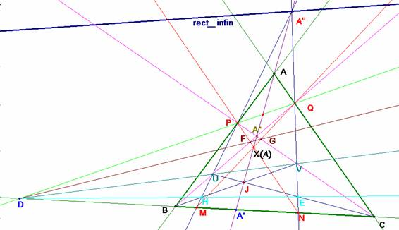
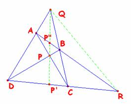
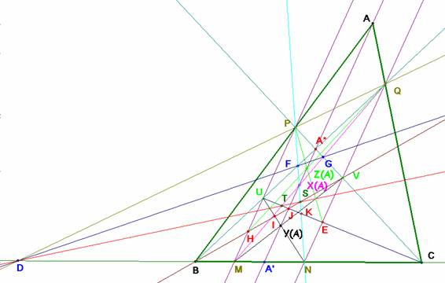

De investigación
Problema 313.- Sea ABC un triángulo no rectángulo. Trazamos, la ceviana arbitraria AA' desde A al lado BC. Construimos el triángulo A*BC rectángulo en A*, punto que está en la ceviana AA', del que prolongamos su catetos hasta que corten en los puntos P y Q, a los lados AB y AC, respectivamente. Los puntos M y N sobre el lado BC se obtienen como intersección de las paralelas por P y Q, a la ceviana AA',
respectivamente.
Construimos los siguientes puntos:
X(A), es la intersección de PN y QM; D, es la intersección de PQ y BC ; U, es la intersección de PM y BQ ; V, es la intersección de QN y PC; E, es la intersección de UC y QN ; F, es la intersección de PN y QB; G es la intersección de PC y QM; H, es la intersección de BV y PM; I es la intersección de UN y BV; J, es la intersección de UC y BV; K, es la intersección de UC y PN; Y(A), es la intersección de UN y MV; T es la intersección de UC y MQ; S es la intersección de BV y PN; Z(A) la intersección de HQ y PE.
Demostrar:
a) las rectas, AA', PN, QM son concurrentes en X(A);
b) las rectas, AA', UN, MV son concurrentes en Y(A);
c) las rectas AA', HQ, PE, son concurrentes en Z(A)
d1) D, F, G alineados. d2) D, T, S alineados.
e) M, T, X(A), G, Q alineados
f1) P, F, X(A), S, K, N alineados. f2) B, H, I, J, S, V alineados.
f3) C, E, K, T, J, U alineados.
g1) H, Z(A), Q alineados. g2) P, Z(A), E, alineados
Romero, J.B. (2006): Comunicación personal.
Solución de Saturnino Campo Ruiz, profesor del IES Fray Luis de León, de Salamanca (10 de junio de 2006).-
a) Vamos a considerar el enunciado dentro del plano proyectivo, las rectas paralelas se transforman en rectas concurrentes en el punto del infinito A”, de la recta AA’. En esa situación los triángulos ABC y A”MN son homológicos con centro de homología el punto A’. El eje de homología es la recta formada por los puntos de intersección de los lados homólogos, la recta PQ.
Para ver que AA', PN y QM son concurrentes en X(A) basta con considerar que las rectas que pasan por B y Q y por C y P se transforman por la homología en las rectas MQ y NP respectivamente pues los puntos P y Q son fijos al pertenecer al eje .

En consecuencia si BQ y CP se corresponden con MQ y NP, el punto de intersección de las primeras, A* tiene como imagen el punto X(A) de intersección de las otras dos, y ambos están alineados con el centro de homología A’.
Es fácil ver también que los triángulos A*UV y X(A)MN también son homológicos, siendo A” su centro de homología y su eje la recta PQ, ya que A*U∩X(A)M = Q y A*V∩X(A)N = P. El tercer par de lados UV y MN han de cortarse en el eje, esto es, en D (MN∩PQ=D) con lo cual, U y V están alineados con D, igual que M, N y P, Q.
Asimismo A*UV es homológico con X(A)PQ. El centro de homología es A” y el eje es la recta FG (A*U ∩X(A)P=F; A*V ∩X(A)Q=G ). Como antes, el otro par de lados homólogos UV, PQ concurren en un punto de la recta FG : el punto D. Por tanto F y G también están alineados con D.
b) Todas estas alineaciones con D nos invitan a considerar la proyección de vértice D de la recta PM sobre la recta QN. En esta proyección, según acabamos de ver se corresponden los puntos U y V, F y G, P y Q. El eje proyectivo de esta homografía se calcula fácilmente: es la recta AA’.
Sabemos que el eje de una homografía contiene los puntos de intersección de las rectas LR’con R’L, por ello aquí, X(A)= PN∩MQ, A*= PV∩UQ e Y(A)= UN∩MV están sobre la recta AA’ como pretendíamos demostrar.
c) Para probar que AA’, HQ y PE son concurrentes (en Z(A)) bastará con concluir que la imagen de H por esta proyección es el punto E.
La imagen de H se obtiene como sigue:
Tenemos que P à Q, M à N , U àV, F à G.
Proyecto H desde V sobre la recta AA’ para obtener el punto HV∩AA’= BV∩AA’
La proyección desde U sobre QN es la imagen H’ de H.
Ahora bien, ¿qué punto es BV∩AA’?
Si demostramos que este punto es J, tendremos H’=JU∩QN= CU∩QN=E, con lo que H y E también se corresponden. Para ello necesitamos lo que sigue.
Cuaterna armónica sobre un lado del cuadrivértice.
En un cuadrivértice ABCD los lados que pasan por un punto diagonal Q están armónicamente separados por las rectas que unen ese punto con los otros dos puntos diagonales. (Los puntos diagonales son P, Q y R)

La propiedad es inmediata, proyectando la cuaterna (P’RDC) desde P sobre AB y luego desde Q sobre CD, al ser invariante por proyecciones obtenemos (P’RDC) =(P’RCD) que es su inversa. Al no haber dos puntos iguales ha de ser necesariamente (P’RDC) = ─1. Así pues, (QP’, QR, QD, QC) = ─1.
Ahora volvemos otra vez al problema.
Si el cuadrivértice está formado por los puntos P, Q, B y C según acabamos de ver la cuaterna (DA’BC) es armónica. Si lo forman U, V, B y C y llamamos J’ a la proyección de J=CU∩BV desde A* sobre BC, también es armónica la cuaterna (DJ’BC), por tanto J’=A’ y J yace sobre la recta AA’ como deseábamos.
d1) Ya lo hemos demostrado (parte final de a)).
d2) Los triángulos A*UV y X(A)TS son homológicos: el centro de homología es el punto J y el eje de homología es la recta PQ. El par de rectas homólogas UV, TS han de cortarse en un punto del eje de homología; UV lo corta en D y por eso TS también: los puntos T y S están alineados con D.
El resto de apartados son las definiciones de los puntos.
La gráfica final representa todos los puntos definidos en el enunciado.
Consideración final:
La respuesta es clara. En ninguna parte, y es que no se necesita esta hipótesis. Suponemos que se trata de un recurso del autor para seleccionar un punto sobre la recta AA’. No lo es en nuestra primera gráfica aunque sí en la final.
Tampoco se usa para nada que A” sea un punto situado en la recta del infinito.
